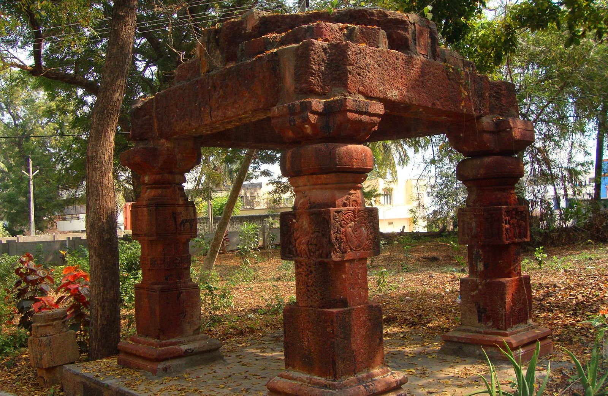
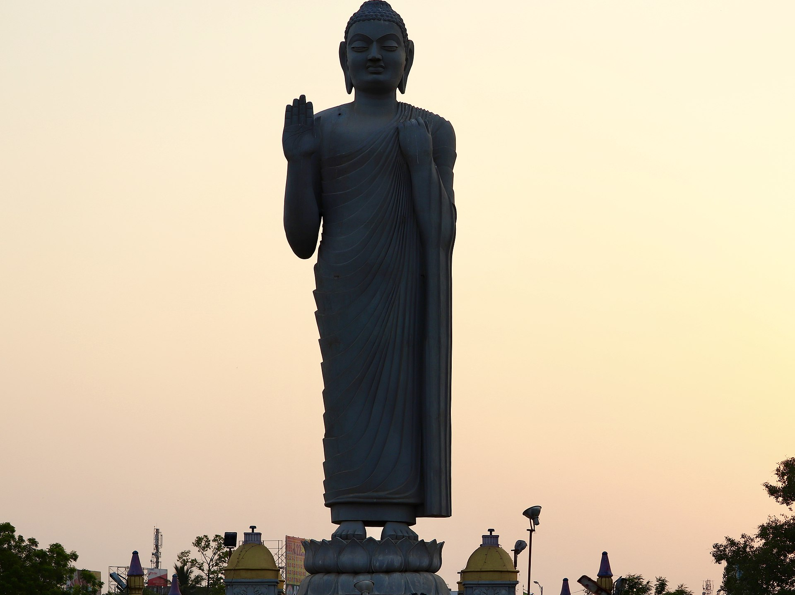
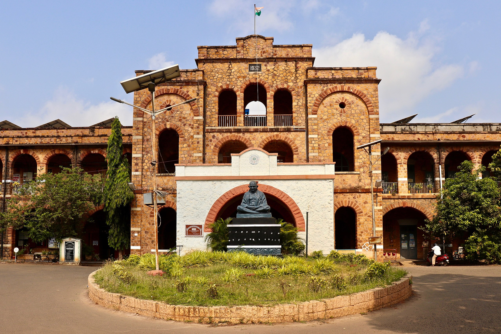

Top three activities to do at Eluru

There were 25 inscriptions of Vengi Chalukyas found on these pillars of Mandapam at Kotadibba, (Eluru Fort Land)

A 74 feet Budha Statue at Budha Park, near Satyanarayana Theater

The District Collector's office is one of the oldest buildings in the town built during the British Empire era.